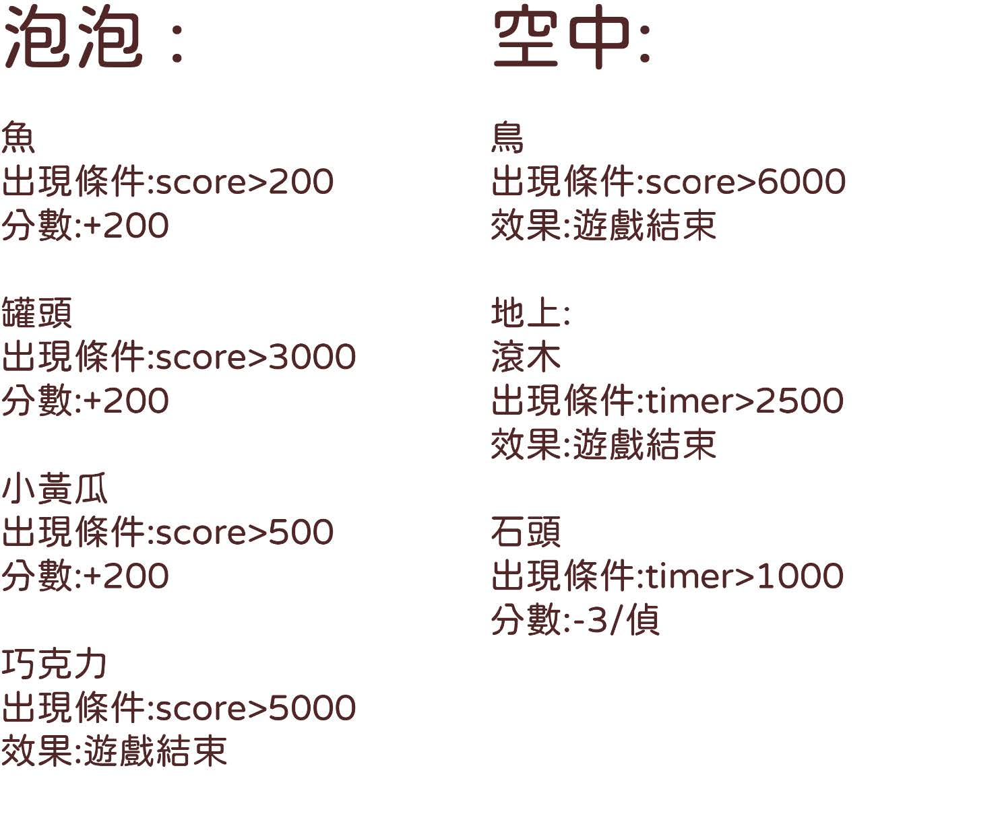

一款貓咪療癒小遊戲
一款貓咪療癒小遊戲
想製作一款輕鬆休閒可愛的遊戲，於是想到了天上有貓咪掉下來的點子 。
操縱角色利用箱子接住貓咪，同時要避開場景中出現的障礙以及各種陷阱。
遊戲結束後可以在家中以及圖鑑看到已蒐集貓咪的資訊 。
接到對應的貓咪會開啟對應的圖鑑內容，圖鑑內會顯示各種貓咪的資訊，每隻貓都會有幾篇小故事，需抓到一定數量才會依序解鎖故事內容，圖鑑內也會顯示每種貓咪所抓到的數量。
利用wasd 移動 利用滑鼠點擊天上出現的泡泡獲取更多分數所有物件的速度都會隨著遊戲時間越來越快被障礙擠出畫面以及碰到特定物品遊戲結束。
拯救從空中掉落的貓咪。
獲得高分蒐集各品種貓咪並完成圖鑑蒐藏。
不要碰到急死物件EX:滾木、鳥、點擊巧克力、以及超出螢幕範圍。
遊戲狀態主要依以下兩個數值做判斷:分數（score）、計時器（timer）
timer為每一幀+1
遊戲上方UI顯示的當前分數為score加上
timer/20（時間加成）
timer除了有分數加乘，也對影響獲得分數時的倍率計算 倍率為1+timer/7200
| 道具： 只要達成條件後就會持續生成，每個道具的效果不同 也會有些帶有及死效果。泡泡為特殊道具，需用滑鼠點擊才會觸發，角色碰觸到不會有效果 |
 | 障礙物： 總共有四個階段的設計，遊戲內計時器（timer）時間只要一到設定的值就會進到下一階段。 |
貓咪： 的生成會依目前獲得分數（score）判定（未加上時間加成的分數），一次最多出現三種街道貓咪後會將總捕獲數量加到陣列中，以便在家中以及圖鑑顯示 |
起始畫面
貓舍
圖鑑
遊戲畫面